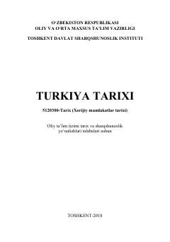

TTQadimgi davrdan boshlab Usmoniylar imperiyasi va zamonaviy davrgacha bo'lgan Turkiya tarixi bayon qilingan o'quv qo'llanma.
Mazkur o'quv qo'llanma Kichik Osiyoning qadimgi va o'rta asrlar tarixi, Usmoniylar imperiyasining yangi davri hamda Turkiyaning eng yangi davri masalalarini yoritadi. Kitob Toshkent davlat sharqshunoslik instituti tomonidan tarix va sharqshunoslik yo'nalishlari talabalari uchun nashr etilgan bo'lib, keng kitobxonlar ommasiga ham mo'ljallangan.